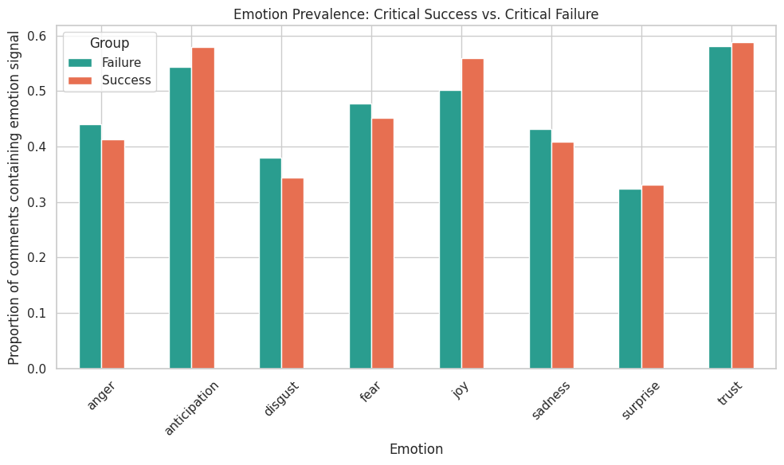
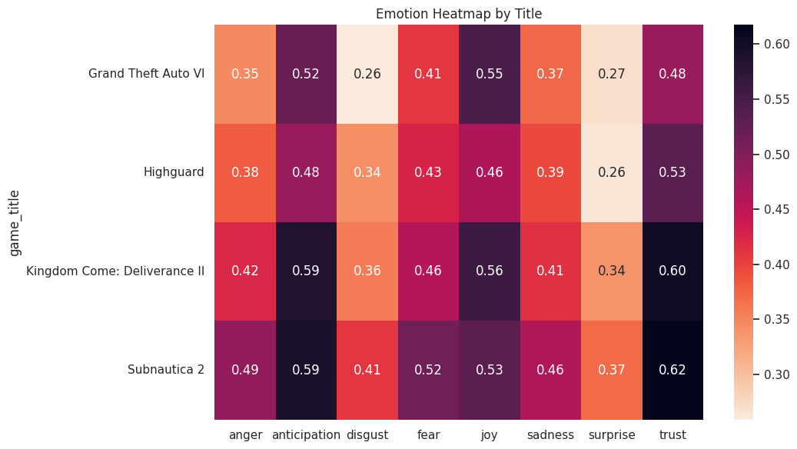
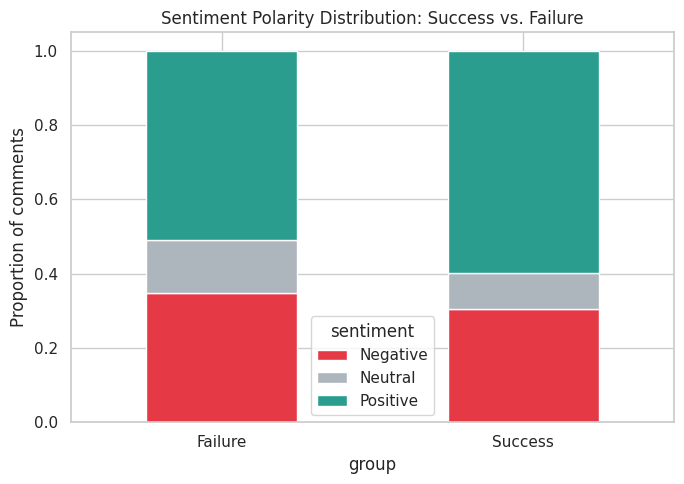
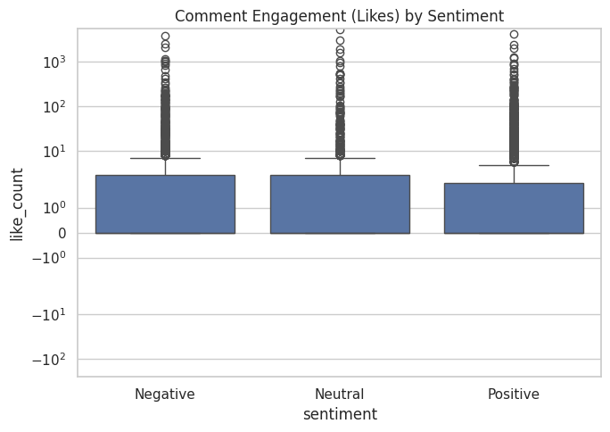

Analyzing Public Reactions to Critical Successes and Failures
Multi-label emotion and sentiment detection via predictive NLP models on YouTube gaming media — comparing audience reaction to two celebrated 2026 releases against two that met public backlash.
Reception of a newly released video game is rarely a single, uniform reaction. Audiences respond with mixtures of joy, anticipation, anger, and disgust that a plain positive/negative score cannot capture, and sarcasm complicates automated reading further.
This study compares public emotional reactions to two 2026 case studies of critical success — Kingdom Come: Deliverance II and Grand Theft Auto VI — against two case studies of critical failure and community backlash — Highguard and Subnautica 2 — using 8,386 cleaned YouTube comments collected via the YouTube Data API v3. Comments were weak-labeled for three-class sentiment using VADER and for eight Plutchik-model emotions (anger, anticipation, disgust, fear, joy, sadness, surprise, trust) using the NRC Emotion Lexicon. Three predictive architectures were benchmarked for multi-label emotion classification on TF-IDF and contextual embeddings: Logistic Regression, Random Forest, and a fine-tuned RoBERTa-base transformer.
Random Forest achieved the strongest multi-label performance (macro-F1 = 0.879, Hamming loss = 0.102), outperforming both Logistic Regression (macro-F1 = 0.817) and fine-tuned RoBERTa (macro-F1 = 0.767), a result attributable to the lexicon-derived nature of the labels rewarding lexical-overlap models over contextual ones. Trust and anticipation were the most prevalent and best-classified emotions across both groups, while emotion prevalence differed only modestly between success and failure titles, suggesting that critical failure provokes engaged, multi-emotion discourse rather than uniformly negative reaction. Comment-level engagement (like count) correlated positively with the presence of trust but negatively with every other emotion, a counter-intuitive pattern discussed in relation to outrage-engagement literature. We close with a discussion of weak-label limitations and directions for validated, hand-annotated extensions of this work.
A single score can't hold what a comment section feels
Problem statement
Audience reaction to a video game release is emotionally heterogeneous. A single title can simultaneously provoke joy at strong gameplay systems, anger at monetization decisions, and disgust at a live-service pivot, often within the same comment thread, and frequently laced with sarcasm that undermines lexical sentiment scoring (a comment reading "10/10, just to spite the haters" ironically praises a poorly received title). Coarse positive/negative/neutral classification collapses this variance into a single dimension and discards the specific emotional texture communities express toward critical successes versus critical failures. This motivates a multi-label emotion framework capable of representing co-occurring, sometimes contradictory, emotional signals within a single comment.
Core objective
The core objective of this study is to compare the emotional variance expressed in YouTube comment sections responding to critically successful game releases against those responding to critically unsuccessful or controversial releases, using a shared multi-label emotion schema and a shared sentiment schema across both groups.
Research question
This study investigates whether predictive NLP models trained on weak-labeled comment data can map shifting, multi-dimensional community sentiment in live 2026 gaming discourse, and whether that discourse differs measurably between critically successful and critically unsuccessful titles.
Four titles, two verdicts, one shared coding scheme
A. Case study selection & data collection
Four 2026-era releases were selected to form two contrasting groups. The critical success group comprises Kingdom Come: Deliverance II and Grand Theft Auto VI, chosen for high critical reception, strong player trust, and, for GTA VI — sustained anticipation surrounding its release. The critical failure / backlash group comprises Highguard, a live-service shooter that launched to a "Mostly Negative" Steam rating despite a strong concurrent-player debut, and Subnautica 2, whose early-access launch was accompanied by public controversy over developer terminations and licensing/ownership concerns.
Comment-level data text, author, publish timestamp, like count, and reply count, was collected via the YouTube Data API v3 commentThreads endpoint across 15 videos (reviews, reaction videos, and controversy/critique essays) spanning the four titles, yielding 8,455 raw comments before deduplication.
| Title | Group | Videos | Comments | Share |
|---|---|---|---|---|
| Kingdom Come: Deliverance II | Success | 4 | 3,561 | |
| Grand Theft Auto VI | Success | 3 | 508 | |
| Highguard | Failure | 4 | 1,935 | |
| Subnautica 2 | Failure | 4 | 2,451 |
B. Text preprocessing
Raw comment text was cleaned by removing URLs, HTML entities, and @-mentions; converting emoji to their textual descriptions via the emoji library prior to lowercasing, so that emotionally loaded emoji contribute lexical signal rather than being discarded as noise; and stripping non-alphabetic characters. Tokenization, English stopword removal, and lemmatization were performed with NLTK [11]. Comments that reduced to an empty string after cleaning, emoji-only or link-only spam, were discarded, leaving 8,386 comments for downstream analysis.
C. Weak-label target construction
No pre-existing dataset labels YouTube gaming comments with Plutchik-model emotions, so labels were constructed through weak (silver) supervision rather than manual annotation, consistent with standard practice in low-resource emotion mining [2]. Three-class sentiment (Positive / Negative / Neutral) was assigned via the VADER compound score, thresholded at ±0.05. Multi-label emotion targets were assigned via the NRC Emotion Lexicon: for each of the eight emotion categories, a comment received a positive label if at least one of its lemmatized tokens carried that emotion association in the lexicon. Comments with no lexicon hits across all eight categories (2,192 of 8,386, or 26.1%) were excluded from the emotion-modeling subset, leaving 6,194 comments for multi-label classification.
D. Feature extraction
Two feature representations were used depending on model family. For Logistic Regression and Random Forest, TF-IDF vectorization was applied with unigrams and bigrams, a maximum vocabulary of 10,000 terms, and a minimum document frequency of 3. For the transformer baseline, the RoBERTa tokenizer's native subword embeddings were used directly, with sequences truncated or padded to 128 tokens. An 80/20 train–test split, stratified on sentiment class, was applied consistently across all three models to allow direct performance comparison.
E. Predictive models
Three architectures were benchmarked for the multi-label emotion classification task: (1) Logistic Regression, wrapped in a MultiOutputClassifier to produce one binary classifier per emotion label, with balanced class weighting to counter label imbalance; (2) Random Forest, likewise wrapped in a MultiOutputClassifier, using 200 estimators and balanced class weighting [9]; and (3) a fine-tuned RoBERTa-base transformer [5] with a sigmoid multi-label classification head and binary cross-entropy loss, trained for three epochs on a GPU runtime. Sentiment (single-label, three-class) was classified separately using Logistic Regression on the same TF-IDF features, since that task does not require a multi-output architecture.
Reading multi-label performance correctly
Multi-label emotion classification was evaluated using macro-averaged F1 (equal weight per emotion class, sensitive to performance on rarer classes such as surprise and disgust), micro-averaged F1 (weighted by instance count), and Hamming loss, the fraction of individually mis-predicted labels across the full label set [6]. Sentiment classification, being single-label multi-class, was evaluated using per-class precision, recall, and F1-score, alongside overall accuracy.
Backlash looks less like negativity and more like noise
A. Emotion label distribution
Across the 6,194 comments with at least one emotion signal, trust (58.5%, 3,621 comments) and anticipation (56.1%, 3,474 comments) were the most prevalent emotions, followed by joy (53.0%), fear (46.5%), anger (42.8%), sadness (42.1%), disgust (36.3%), and surprise (32.7%). The dominance of trust and anticipation across the full corpus, including the failure group, indicates that even critically unsuccessful titles generate substantial forward-looking and trust-related discourse, likely reflecting comments about developer intentions, future patches, or comparisons to earlier titles in a franchise.
B. Emotion prevalence: success vs. failure

This pattern supports the framing in the Introduction: critical failure in gaming communities provokes engaged, multi-emotion discourse rather than a uniform shift toward negative affect alone.
C. Emotion prevalence by title
At the individual-title level, Subnautica 2 shows the highest prevalence of nearly every emotion category simultaneously (anger 0.49, disgust 0.41, fear 0.52, trust 0.62), consistent with its comment corpus being drawn substantially from controversy and "drama recap" videos rather than pure gameplay reviews, which tend to elicit stronger reactions across the board rather than polarized ones. Grand Theft Auto VI shows the lowest anger (0.35) and disgust (0.26) of all four titles, consistent with its comments being drawn from trailer-reaction videos recorded before release, where negative firsthand-experience commentary cannot yet occur. Use the toggle below to sort the heatmap by any emotion.

D. Sentiment distribution: success vs. failure

Two factors plausibly explain the muted gap. First, VADER's rule-based scoring is known to misclassify sarcasm, "10/10 just to spite the haters" scores as strongly positive despite mocking intent, which the Introduction anticipated as a core challenge. Second, a meaningful share of comments on failure-group videos are supportive replies agreeing with a critique rather than expressing negativity about the game directly.
E–F. Model performance
| Class | Precision | Recall | F1-score | Support |
|---|---|---|---|---|
| Negative | 0.67 | 0.64 | 0.65 | 406 |
| Neutral | 0.39 | 0.55 | 0.46 | 151 |
| Positive | 0.81 | 0.76 | 0.79 | 682 |
| Accuracy | 0.69 | 1,239 | ||
| Macro avg | 0.62 | 0.65 | 0.63 | 1,239 |
| Weighted avg | 0.71 | 0.69 | 0.70 | 1,239 |
G. Sentiment polarity vs. public engagement
Contrary to the outrage-amplification pattern reported in prior social-media engagement literature [8], negative comments in this corpus did not receive the highest engagement.

What weak labels can and can't tell you
- Weak-label ceiling. Both sentiment and emotion labels are weak/silver labels derived from VADER and the NRC lexicon, not hand-annotated ground truth; reported model performance reflects each model's ability to recover lexicon-defined patterns, not necessarily its ability to detect true human-perceived emotion, the Random-Forest-over-RoBERTa result should be read in that light.
- Sarcasm. Explicitly flagged in the problem statement, sarcasm is a known failure mode of both VADER and lexicon-based emotion tagging, and no sarcasm-detection step was applied; several qualitative examples in this corpus, ironically "positive" comments about Highguard, illustrate this.
- Volume imbalance. The corpus is volume-imbalanced across titles (508 comments for GTA VI versus 3,561 for Kingdom Come: Deliverance II), driven by both channel selection and, for GTA VI, its pre-release trailer-reaction status rather than post-launch reception; per-title findings should be weighted accordingly.
- Engagement proxy. Engagement was proxied by raw like count rather than a normalized view-to-like ratio, since the
commentThreadsendpoint used for extraction does not return video-level view counts.
Backlash is loud, but it isn't just anger
This study compared multi-label emotional reactions to critically successful and critically unsuccessful 2026 game releases using weak-labeled YouTube comment data and three predictive architectures. Emotion prevalence differed only modestly between success and failure groups, with trust and anticipation dominant across both, suggesting that gaming-community backlash manifests as engaged, multi-dimensional discourse rather than a uniform shift to negative affect. Random Forest on TF-IDF features outperformed both Logistic Regression and fine-tuned RoBERTa on the multi-label emotion task, a result attributable to the lexical nature of the weak labels rather than a general claim about model superiority. Engagement analysis revealed a counter-intuitive pattern in which trust, not high-arousal negative emotion, was the only emotion positively associated with comment-level likes.
Future work should prioritize: (1) a hand-annotated validation subset to quantify weak-label noise and enable a fair transformer comparison against genuine ground truth; (2) explicit sarcasm detection prior to sentiment scoring; (3) a balanced, larger-volume corpus per title to control for channel and content-type confounds; and (4) video-level view-count integration to compute a true view-to-like engagement ratio rather than a like-count proxy.
References
- R. Plutchik, "The nature of emotions," American Scientist, vol. 89, no. 4, pp. 344–350, 2001.
- S. M. Mohammad and P. D. Turney, "Crowdsourcing a word–emotion association lexicon," Computational Intelligence, vol. 29, no. 3, pp. 436–465, 2013.
- C. J. Hutto and E. Gilbert, "VADER: A parsimonious rule-based model for sentiment analysis of social media text," in Proc. 8th Int. AAAI Conf. Weblogs and Social Media (ICWSM), Ann Arbor, MI, USA, 2014, pp. 216–225.
- J. Devlin, M.-W. Chang, K. Lee, and K. Toutanova, "BERT: Pre-training of deep bidirectional transformers for language understanding," in Proc. NAACL-HLT, Minneapolis, MN, USA, 2019, pp. 4171–4186.
- Y. Liu et al., "RoBERTa: A robustly optimized BERT pretraining approach," arXiv:1907.11692, 2019.
- M.-L. Zhang and Z.-H. Zhou, "A review on multi-label learning algorithms," IEEE Trans. Knowledge and Data Engineering, vol. 26, no. 8, pp. 1819–1837, Aug. 2014.
- G. Salton and C. Buckley, "Term-weighting approaches in automatic text retrieval," Information Processing & Management, vol. 24, no. 5, pp. 513–523, 1988.
- W. J. Brady, J. A. Wills, J. T. Jost, J. A. Tucker, and J. J. Van Bavel, "Emotion shapes the diffusion of moralized content in social networks," Proc. Nat. Acad. Sci., vol. 114, no. 28, pp. 7313–7318, 2017.
- L. Breiman, "Random forests," Machine Learning, vol. 45, no. 1, pp. 5–32, 2001.
- F. Pedregosa et al., "Scikit-learn: Machine learning in Python," Journal of Machine Learning Research, vol. 12, pp. 2825–2830, 2011.
- S. Bird, E. Klein, and E. Loper, Natural Language Processing with Python. Sebastopol, CA, USA: O'Reilly Media, 2009.
- Google Developers, "YouTube Data API v3 Reference," 2024. Available: developers.google.com/youtube/v3